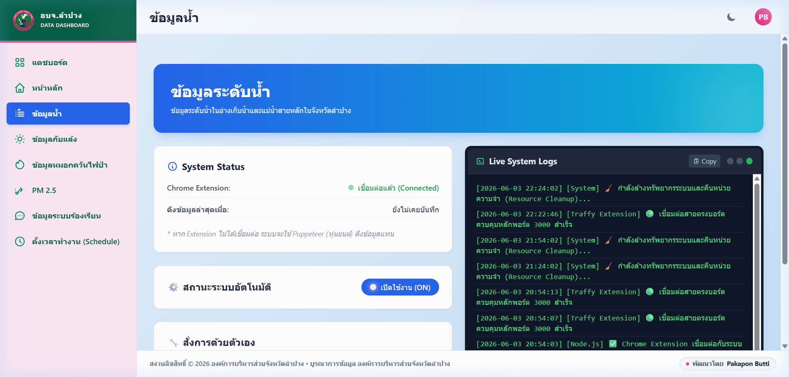
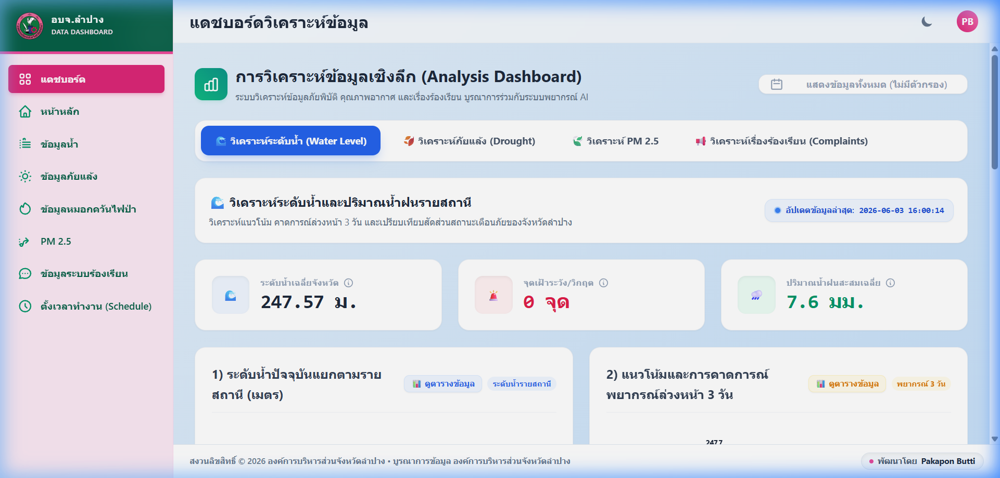
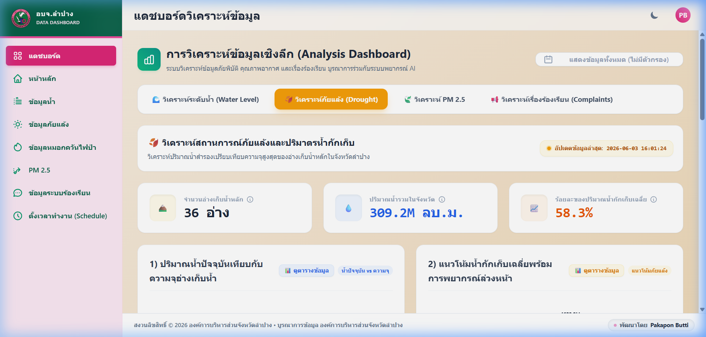
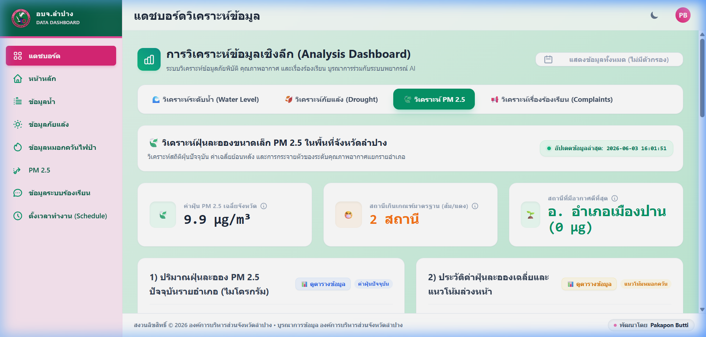
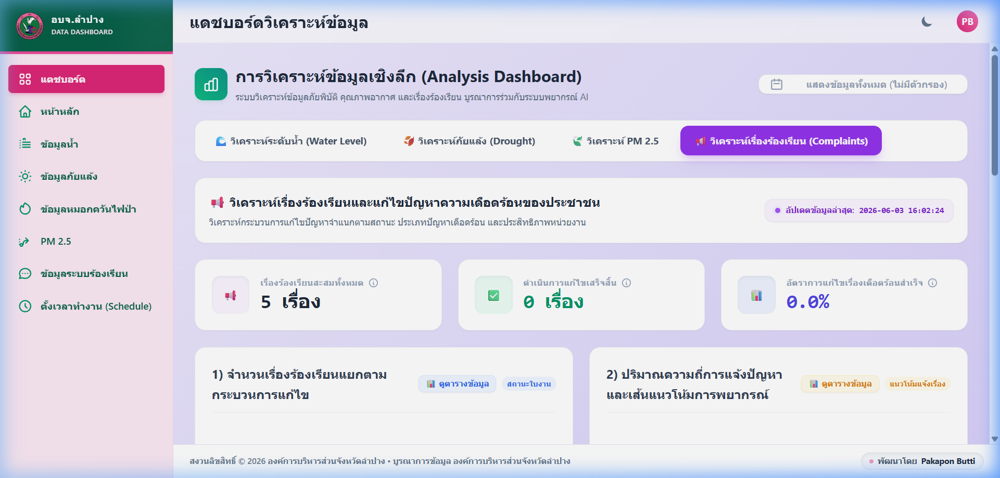
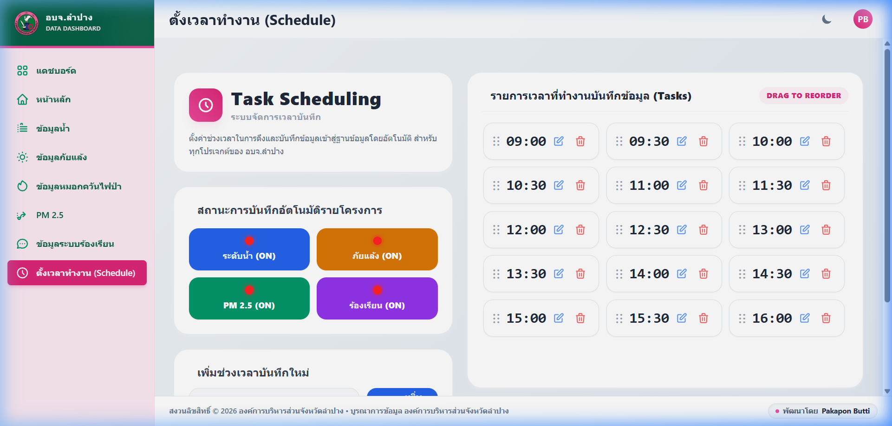

ระบบบูรณาการข้อมูลภัยพิบัติและเรื่องร้องเรียน อบจ.ลำปาง (เวอร์ชัน 2)
ออกแบบใหม่ให้ทำงานด้วย PHP 100% ดึงข้อมูลตรงจาก Server-to-Server API ทั้ง 5 ด้านพร้อมกันด้วย
curl_multi จบภายใน ~3 วินาที
ใช้ระบบ Smart Sleep (กิน Bandwidth 0 Byte ขณะรอเวลา), ศูนย์บันทึก System Log Center v2
(Heatmap 48 ช่อง, คิว Retry อัตโนมัติ, แจ้งเตือนข้อมูลต้นทางค้าง 6 ชม./36 ชม.), ระบบป้องกันความเสี่ยง 24 ชม. (.htaccess 4 ชั้น + Lock + Log Rotation),
พร้อม GitHub Actions Cloud Collector ทุก 30 นาที
.htaccess กันโฟลเดอร์ลับ + Lock + Rotation 5MB1. ภาพรวมสถาปัตยกรรมการทำงาน (System Architecture)
ผังการทำงานเชื่อมโยงระหว่าง API ต้นทาง, Server (Smart Sleep + curl_multi), ฐานข้อมูล water_system2 และระบบแจ้งเตือน
บันทึกผลสำเร็จ/ล้มเหลวของทุกด้าน + เวลารันจริงลง tbl_system_logs, แสดง Heatmap 48 ช่องรายวัน, คิว Retry อัตโนมัติแบบไม่บล็อกงานหลัก และ Export CSV Audit Log
มี .htaccess ป้องกันไฟล์ลับ 4 จุด (Root, runtime/, php_server/, cloud_snapshots/), Atomic File Lock, Log Rotation 5 MB + Housekeeping 30 วัน และ /api/health สำหรับ Uptime Monitor
มี Local DB Spool พักข้อมูลเมื่อ DB ดับ + Auto Backup (.sql.gz) ทุกวัน + GitHub Cloud Failover Alert + โหมดดูฉุกเฉิน (emergency_cloud.html)
2. ชุดทดสอบระบบแบบโต้ตอบได้ทันที (Interactive Test Checklist)
กดปุ่มทดสอบแต่ละขั้นตอนจากหน้าคู่มือนี้ได้เลย ระบบจะยิงทดสอบจริงกับเซิร์ฟเวอร์ที่เปิดอยู่และแสดงผลลัพธ์ด้านขวา
system-health)curl_multi/api/health).htaccess, พื้นที่ดิสก์, อายุข้อมูลล่าสุด, Worker Alive และคิว Retry/api/worker/status)/api/system-logs)/api/traffy/session-status)curl_multi)tbl_alert_notifications / ส่ง Test Email / ยิง Logdb_spool, ไฟล์ Backup 10 ตาราง และเปิดดู emergency_cloud.htmlพร้อมทดสอบ... กดปุ่มด้านซ้ายเพื่อเริ่มตรวจสอบระบบได้เลยครับ
3. ภาพประกอบส่วนประกอบหลักของระบบ (Visual Walkthrough)
ภาพหน้าจอจริงของหน้า Dashboard, แผนที่วิเคราะห์ความเสี่ยง, ตัวดึงข้อมูล และระบบตั้งเวลา

สรุปดัชนีความเสี่ยงทั้ง 13 อำเภอ จ.ลำปาง, แผนที่ GIS, สถานะระดับน้ำ, อ่างเก็บน้ำ, PM 2.5 และเรื่องร้องเรียน
เปิดหน้า Dashboard →
เปรียบเทียบระดับน้ำปัจจุบันกับระดับตลิ่งซ้าย แนวโน้มขึ้น-ลง และกราฟย้อนหลังรายสถานี

ติดตามปริมาณน้ำกักเก็บของอ่างขนาดใหญ่ (กิ่วลม, กิ่วคอหมา, แม่มอก) ขนาดกลาง และขนาดเล็กครบ 36 แห่ง

ดึงค่าฝุ่น PM 2.5 และค่าเฉลี่ย 24 ชม. ของสถานีในจังหวัดลำปางครบทุกอำเภอ

ดึงตรงจาก Traffy Public API ไม่ต้องล็อกอิน พร้อมแยกงาน อบจ.ลำปาง และบันทึกประวัติการเปลี่ยนสถานะ

ตั้งเวลาดึงข้อมูลอัตโนมัติ ดู Terminal Log สดผ่าน Socket.IO และสั่งดึงข้อมูลรายโปรเจค
เปิดหน้า Control Panel →4. เกณฑ์แจ้งเตือนวิกฤตอัตโนมัติ (Gmail SMTP & LINE Messaging API)
ระบบจะตรวจสอบเกณฑ์เหล่านี้อัตโนมัติทันทีหลังดึงข้อมูลรอบใหม่เสร็จ และบันทึกลง tbl_alert_notifications
| ด้านข้อมูล | ⚠️ ระดับเฝ้าระวัง (Warning) | 🚨 ระดับวิกฤต (Critical) | การป้องกันส่งซ้ำ (Deduplication) |
|---|---|---|---|
| 🌊 ระดับน้ำ | น้ำมาก / เฝ้าระวัง (>70–100% ความจุลำน้ำ) | น้ำล้นตลิ่ง (>100% หรือเลยตลิ่ง) / น้ำน้อยวิกฤต (≤10%) | Cooldown 120 นาที ถ้าค่าไม่เปลี่ยนแปลง |
| 🌧️ ปริมาณฝน | ฝนตกหนัก (>35 – 90 มม.) | ฝนตกหนักมาก (>90 มม.) | Cooldown 120 นาที ถ้าค่าไม่เปลี่ยนแปลง |
| 🏜️ อ่างเก็บน้ำ / ภัยแล้ง | น้ำกักเก็บ 31% – 50% | แล้งวิกฤต ≤30% หรือ น้ำล้นสันเขื่อน >100% | แจ้งเฉพาะเมื่อเปอร์เซ็นต์/ระดับเปลี่ยน |
| 💨 ฝุ่น PM 2.5 | 37.6 – 75.0 µg/m³ (เริ่มมีผลต่อสุขภาพ) | ≥ 75.1 µg/m³ (มีผลกระทบต่อสุขภาพ) | Cooldown 120 นาที ถ้าค่าไม่เปลี่ยนแปลง |
| 📢 เรื่องร้องเรียน Traffy | รับเรื่อง / ส่งต่อ / ติดตามเรื่อง (ใน 2 วัน) | เรื่องร้องเรียนใหม่ (รอรับเรื่อง) | แจ้งเฉพาะเรื่องใหม่หรือเปลี่ยนสถานะ/หน่วยงาน |
- ระดับน้ำ / ปริมาณฝน / PM 2.5: แจ้งเตือนหากเวลาข้อมูลจาก API ต้นทางไม่อัปเดตเกิน 6 ชั่วโมง (21,600 วินาที)
- อ่างเก็บน้ำรายวัน: แจ้งเตือนหากข้อมูลไม่อัปเดตเกิน 36 ชั่วโมง (129,600 วินาที)
- ทุกการเก็บข้อมูล, แจ้งเตือน Email/LINE, และ Export รายงาน ถูกบันทึกลง
tbl_system_logs - สามารถดาวน์โหลดเป็นไฟล์ CSV Audit Log จากปุ่มบน Dashboard หรือ
/api/system-logs/exportได้ทันที
5. ขั้นตอนนำขึ้น Server จริงและทดสอบใช้งาน (ปิดคอมพิวเตอร์ตัวเองได้ 100%)
ทำตามลำดับ Step 1 → Step 4 ด้านล่างนี้ได้เลยครับ ดูตามภาพจำลองทีละขั้น ไม่ต้องมีสิทธิ์ Admin บน Server
ขั้นตอน Push โค้ดขึ้น GitHub อย่างละเอียดและปลอดภัย 100%
ตรวจด้วย git status ให้แน่ใจว่าไม่มีไฟล์ความลับ (.env, runtime/, deploy_server/, *.zip) ติดเข้าไป
git status --short
GitHub Actions คอมมิต cloud_snapshots/ ทุก 30 นาที จึงต้องดึงมาต่อท้ายก่อนเสมอ เพื่อไม่ให้ Push ชนกัน (Non-fast-forward)
git pull --rebase --autostash origin main
สเตจโค้ดและคู่มือแล้วสร้าง Commit (หรือรันทดสอบ verify_system_v2.php ก่อนคอมมิต)
git commit -m "docs & v2 update"
ใช้สคริปต์ push_to_github.bat หรือรันคำสั่งด้านล่าง แล้วเปิดแท็บ Actions ดูติ๊กเขียว
git push -u origin main
- เปิด github.com/settings/tokens/new
- ติ๊กถูกช่อง
repoและworkflow→ กด Generate token แล้วก๊อปปี้รหัสghp_... - เปิด PowerShell พิมพ์
cd D:\Water_System2แล้วรัน:
C:\laragon\bin\git\bin\git.exe push -u origin main - ใส่ Username =
PakaponTimและ Password = วาง Tokenghp_...
- เปิด Repo
PakaponTim/Water_System2คลิก uploading an existing file - เปิดโฟลเดอร์
D:\Water_System2\deploy_server\Water_System2กดCtrl+Aลากวางทั้งหมดแล้วกด Commit changes - กด Add file → Create new file พิมพ์ชื่อไฟล์:
.github/workflows/collect_every_30min.yml - วางเนื้อหา Workflow แล้วกด Commit changes → เปิดแท็บ Actions
- ตรวจให้แน่ใจว่า Push โค้ดล่าสุดขึ้น GitHub แล้ว: จากเครื่องคอมฯ กดรัน
push_to_github.bat(หรือgit push -u origin main) เพื่อให้ Commit ใหม่ล่าสุดไปอยู่บน GitHub ก่อน - สั่งทดสอบรันบนหน้า Actions: คลิกชื่อ
Water_System2 Cloud Collector (Every 30 Minutes)ที่เมนูซ้าย → กดปุ่มRun workflowด้านขวาบน → เลือกBranch: mainแล้วกดปุ่มเขียว Run workflow - รอประมาณ 1 นาที: รีเฟรชหน้าแล้วตรวจให้ขึ้นเครื่องหมาย ✅ สีเขียว และมีการเก็บไฟล์ลง
cloud_snapshots/ - ตั้งค่า Domain หลัก + สำรอง: แก้ไขไฟล์
domain_config.json(ตั้งprimary_domainและbackup_domainได้ถึง 2 โดเมน) หรือกรอกผ่านหน้าserver_setup.phpเพื่อให้ GitHub Actions ปลุกทั้ง 2 โดเมนและแจ้ง Failover อัตโนมัติ (หรือตั้ง SecretWATER_SERVER_CRON_URL/WATER_SERVER_BACKUP_CRON_URL)
ก๊อปปี้โฟลเดอร์ไปวางบน Server (คัดเฉพาะไฟล์ใช้งาน)
- รัน
php php_server/build_server_package.phpเพื่อสร้างแพ็กเกจปลอดความลับ (0 Secrets) ที่deploy_server/Water_System2_Server_Deploy.zip(~4.5 MB) - นำโฟลเดอร์
Water_System2ไปวางบน Subdomain / Folder ของ Server (พร้อมไฟล์ป้องกัน.htaccessทั้ง 4 ชั้น) - ไม่ต้องอัปโหลด โฟลเดอร์
node_modules/,runtime/,scratch/หรือ.envจากเครื่องพัฒนา
ตั้งค่า MySQL บน Server และสร้างตารางอัตโนมัติ
- เปิดเบราว์เซอร์ไปที่หน้าตั้งค่าบน Server:
http://ชื่อเซิร์ฟเวอร์/Water_System2/server_setup.php - กรอก Host, Database Name, Username, Password ของ MySQL บน Server (เมื่อตั้งค่าแล้ว การแก้ไขจากภายนอกต้องยืนยันรหัสผ่านเดิม)
- กดปุ่มเขียว "💾 บันทึกค่าและตรวจสอบตารางฐานข้อมูลอัตโนมัติ" (ระบบสร้างครบทั้ง 10 ตาราง รวม
tbl_system_logsให้อัตโนมัติ) - กดปุ่มน้ำเงิน "🚀 ทดสอบดึงข้อมูล... (cron.php)" เพื่อดูดข้อมูลชุดแรกเข้า Server
เปิด Smart Sleep + ตั้งแจ้งเตือน Gmail/LINE แล้วปิดคอมได้เลย
- ตั้งปลุก Server 24 ชม.: เพิ่ม Secret
WATER_SERVER_CRON_URLใน GitHub ชี้มาที่ Subdomain.../cron.phpและตั้ง Uptime Monitor ชี้ที่endpoint.php?r=/api/health(หรือเปิดworker.php?action=start) - เปิดหน้า
notification.htmlใส่ LINE Token + Group ID และเพิ่มอีเมลผู้บริหารที่ต้องการรับแจ้งเตือน แล้วกดทดสอบส่งอีเมล - Traffy Automation: ระบบดึง Traffy Public API อัตโนมัติโดยไม่ต้องใช้ Chrome Extension (หรือใส่
org_id/uuid/ LINE Token ใน UI และต่อยอด Traffy Exchange APIget-authได้) - เสร็จสมบูรณ์! ปิดคอมพิวเตอร์ได้เลย Server + GitHub Actions จะทำงานเก็บข้อมูลและแจ้งเตือนต่อตลอด 24 ชม.